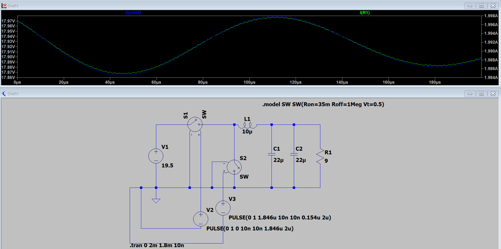
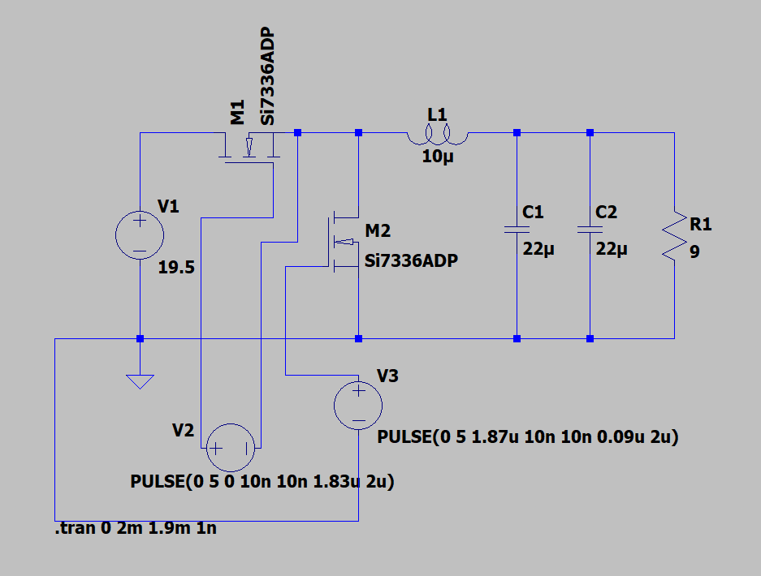
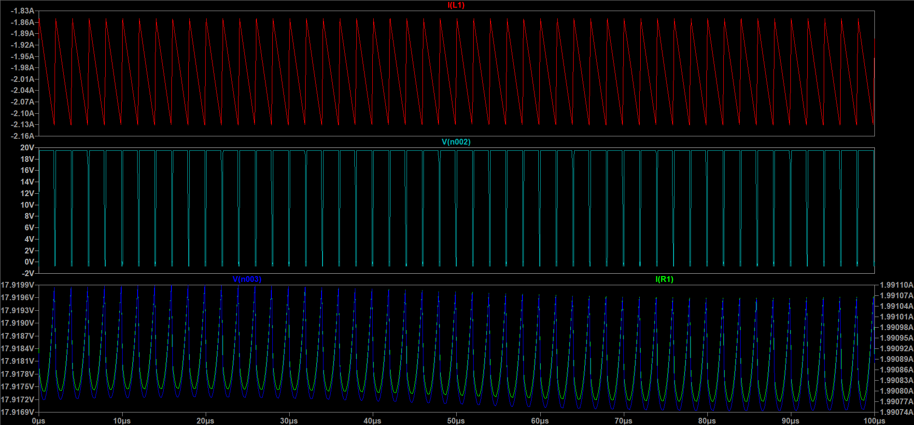
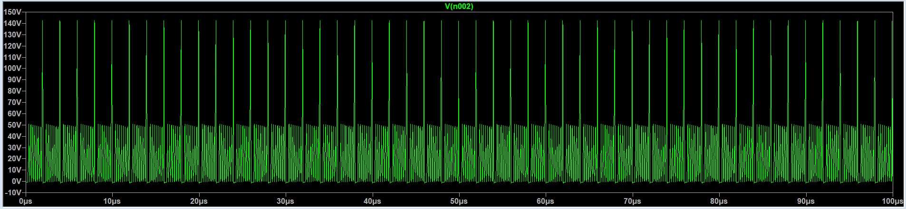
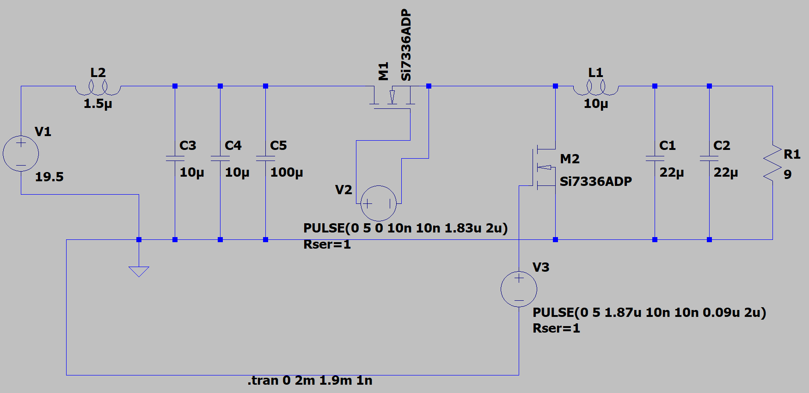
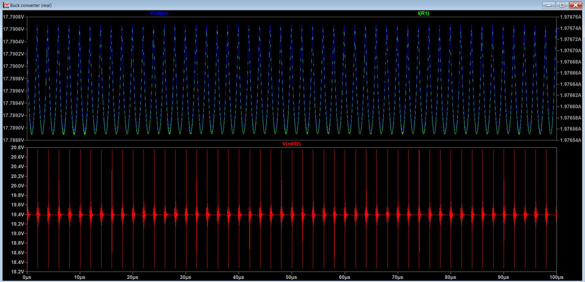
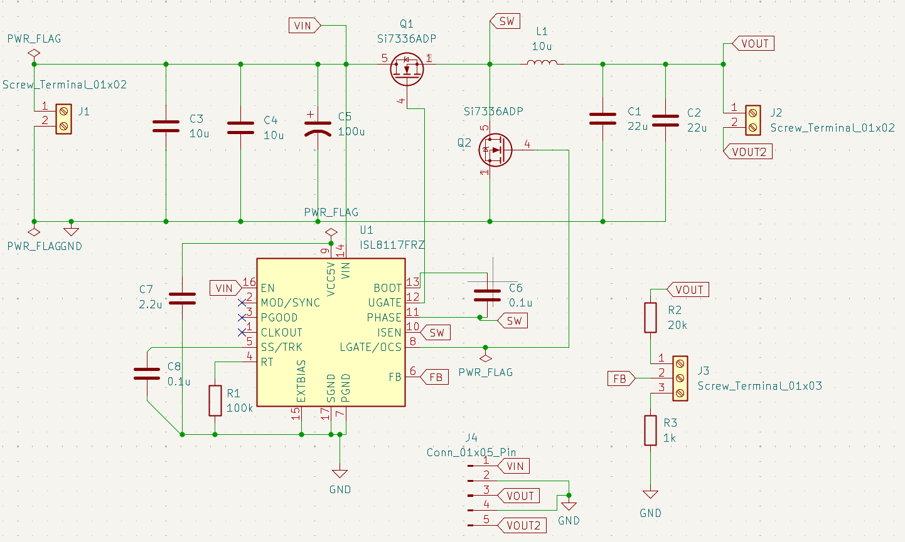
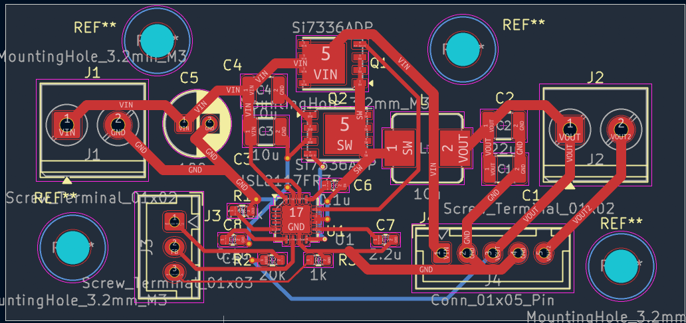
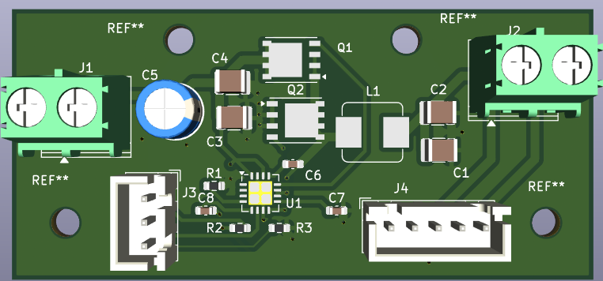

Adjustable Synchronous Buck Converter (1.2V – 18.0V @ 3A)
A variable bench power supply designed to step down a standard 19.5V laptop charger (HP Omen 16) into an adjustable, low-noise DC output.
1. Specifications & Design Envelope
| Parameter | Specification | Implementation Notes |
|---|---|---|
| Input Voltage (\(V_{in}\)) | 19.5V DC | HP Omen 16 power brick via screw-terminal pigtail |
| Output Voltage Range (\(V_{out}\)) | 1.2V – 18.0V | Closed-loop potentiometer feedback network |
| Maximum Output Current (\(I_{out}\)) | 3.0A | Saturation-rated power inductor (\(I_{sat} \ge 4\text{A}\)) |
| Switching Frequency (\(f_{sw}\)) | 500 kHz | Programmed via 100kΩ timing resistor on RT pin |
| Output Voltage Ripple | < 30 mV pk-pk | Dual 22µF parallel low-ESR ceramic caps |
| Target Efficiency | > 90% | Synchronous rectification using dual NMOS FETs |
2. Mathematical Sizing & Derivations
Click to expand Inductor & Capacitor Calculations
A. Duty Cycle & Timing
B. Inductor Sizing (\(L\))
Targeting a ripple current (\(\Delta I_L\)) of 30% at max current (3.0A):
Worst-case ripple occurs at \(D = 0.5\) (\(V_{out} = 9.75\text{V}\)):
Inductor Peak / Saturation Margin:
Selected: Bourns SRP7028A-100M (\(10\mu\text{H}\), \(I_{sat} \ge 4.0\text{A}\)).
C. Output Capacitor Sizing (\(C_{out}\))
Selected: Two \(22\,\mu\text{F}\) 1210 X7R ceramic capacitors in parallel (\(44\,\mu\text{F}\) total).
3. Simulation & Circuit Progression
Stage 1: Ideal Switching Baseline
To validate the duty cycle math and filter sizing, the circuit was first modeled using ideal voltage-controlled switches and an ideal DC source.

Figure 1: Ideal LTspice model confirming target 18V output delivering 2A through a 9Ω load.Stage 2: Realistic MOSFET Power Stage & Waveform Verification
The ideal switches were replaced with real Siliconix/Vishay Si7336ADP N-channel MOSFETs, incorporating real \(R_{DS(on)}\) and parasitic capacitances.

Figure 2: Power stage schematic utilizing dual Si7336ADP PowerPAK SO-8 MOSFETs.
Figure 3: Top to bottom: Inductor ripple current (\(I_L\)), switch node square wave (\(V_{SW}\)), and output voltage/current stability.Waveform Analysis: * Inductor Current (\(I_L\)): Verified triangular ripple behavior in continuous conduction mode (CCM). Peak current confirmed within the safe saturation margin of the selected inductor core. * Switch Node (\(V_{SW}\)): Monitored sharp transitions and confirmed gate timing prevented dead-time shoot-through.
Stage 3: The Parasitic Inductance Problem
In practical applications, power is delivered through a ~1.5m laptop cable. Modeling this wire parasitic inductance (~\(1.5\mu\text{H}\)) combined with 10ns switching edges revealed a severe issue:

Figure 4: Unfiltered input voltage (\(V_{in}\)) exhibiting severe \(LC\) ringing with inductive spikes exceeding 140V.Because the MOSFETs are rated for \(30\text{V}\), these undamped voltage spikes would cause immediate catastrophic breakdown on first power-up.
Stage 4: Input Damping Solution
To clamp input inductive kickback while filtering high-frequency switching currents, a hybrid 3-capacitor network was implemented: * High-Frequency Ceramic Decoupling (\(2\times 10\mu\text{F}\) 1210): Positioned immediately at the high-side FET drain to provide transient current and minimize local loop area. * Electrolytic Damping (\(1\times 100\mu\text{F}\)): Selected for its higher internal ESR to act as an \(RC\) snubber, absorbing input energy surges and damping cable resonance.

Figure 5: Input network incorporating \(1.5\mu\text{H}\) cable inductance model and hybrid ceramic/electrolytic decoupling.
Figure 6: Regulated input voltage (\(V_{in}\)) successfully clamped to a stable 19.4V DC rail alongside clean output voltage and current.4. Hardware Implementation & KiCad Schematic
To translate the simulated power stage into physical hardware, the design incorporates a dedicated Renesas ISL8117FRZ synchronous PWM controller IC.

Figure 7: Complete KiCad schematic including controller IC, bootstrap circuitry, feedback divider, and external display headers.- Power Interfacing: Due to the lack of PCB-mount 4.5mm × 3.0mm barrel jack connectors, heavy-duty 5.00mm Phoenix screw terminals were utilized with a stripped pigtail cable.
- Closed-Loop Regulation: JST-XH 3-pin headers route the feedback node to an external panel-mount potentiometer for variable output adjustment.
- Instrumentation: 5-pin JST-XH header integrated for an external digital voltage/current panel display.
5. Bill of Materials (BOM)
| Item | Designator | Qty | Value | Description | Package | Part Number |
|---|---|---|---|---|---|---|
| 1 | U1 | 1 | ISL8117FRZ | Synchronous Buck Controller | QFN-16 (4×4mm) | ISL8117FRZ-T |
| 2 | Q1, Q2 | 2 | Si7336ADP | 30V 30A N-Channel MOSFET | PowerPAK SO-8 | Si7336ADP-T1-GE3 |
| 3 | L1 | 1 | 10µH | Shielded Power Inductor (\(I_{sat} \ge 4.0\text{A}\)) | SMD 7.3×6.6mm | Bourns SRP7028A-100M |
| 4 | C1, C2 | 2 | 22µF | Output Filter Ceramic, X7R 25V | SMD 1210 | Murata / TDK |
| 5 | C3, C4 | 2 | 10µF | Input High-Freq Ceramic, X7R 50V | SMD 1210 | Murata / TDK |
| 6 | C5 | 1 | 100µF | Input Bulk Electrolytic, 50V Low-ESR | Radial THT D6.3mm | Nichicon / Panasonic |
| 7 | C6, C8 | 2 | 0.1µF | Bootstrap (C6) & Bypass (C8) Caps | SMD 0603 | Standard 0603 |
| 8 | C7 | 1 | 2.2µF | VCC LDO Decoupling Capacitor | SMD 0603 | Standard 0603 |
| 9 | R1 | 1 | 100kΩ | Frequency Setting Resistor, 1% | SMD 0603 | Standard 0603 |
| 10 | R2 | 1 | 20kΩ | Upper Feedback Resistor, 1% | SMD 0603 | Standard 0603 |
| 11 | R3 | 1 | 1kΩ | Lower Feedback Limit Resistor, 1% | SMD 0603 | Standard 0603 |
| 12 | J1, J2 | 2 | 2-Pin | Screw Terminal Blocks (5.00mm) | THT Horizontal | Phoenix PT 1,5/2-5,0-H |
| 13 | J3 | 1 | 3-Pin | Potentiometer Harness Header | JST-XH 2.50mm | JST B3B-XH-A |
| 14 | J4 | 1 | 5-Pin | LED Panel Meter Connector | JST-XH 2.50mm | JST B5B-XH-A |
6. PCB Layout & Physical Design

Figure 8: 2-layer routing with solid ground plane stitching, wide high-current power polygons, and short gate-drive loops.
Figure 9: Populated 3D board view showing connector clearance, power stage density, and M3 mounting points.- Continuous Layer 2 Ground Plane: Uninterrupted bottom copper return under critical high-\(di/dt\) switching nodes minimizes radiated EMI and suppresses ground bounce.
- Thermal Management: Via stitching arrays adjacent to MOSFET thermal pads and the power inductor transfer heat into internal copper planes.
- Critical Loop Routing: Shortened the distance between input ceramic capacitors, high-side drain, low-side source, and ground to minimize high-frequency loop inductance.
7. Status & Bench Testing Roadmap
- [x] Mathematical calculations and worst-case component sizing[cite: 18, 19].
- [x] LTspice transient modeling and parasitic spike mitigation[cite: 20, 21].
- [x] KiCad schematic capture and 2-layer layout optimization[cite: 22, 23, 24].
- [ ] PCB fabrication and SMD reflow soldering.
- [ ] Oscilloscope verification: switch-node ringing and load step transient response across 1.2V–18V sweep.